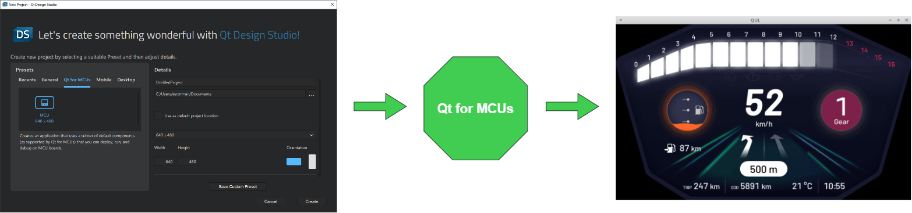

Developing Applications for MCUs
As a GUI/application developer, use Qt Design Studio to bring your designs to life. Add further functionality to your applications and utilize the prototyping features of Qt Design Studio to simulate and validate interactions and their dynamic behavior.
You can also test, preview, and fine-tune your designs to pixel-perfection live on the desktop or on an actual MCU target device. For more information, see Validating with Target Hardware.

With Qt Design Studio, designers and developers can work together on common projects to develop applications. As a designer you can use the views in the Design mode to modify UI files (.ui.qml). As a developer you can use Qt Creator to work on the Qt Quick (.qml) and other files that are needed to implement the application logic and to prepare the application for production. For more information, see Implementing Applications.